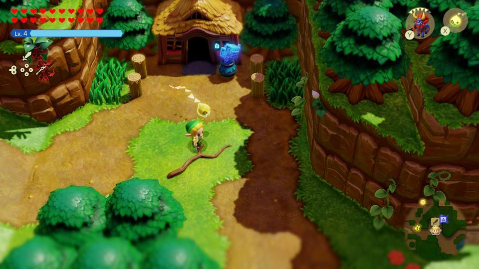

Jeux Vidéos
Les jeux vidéos, et plus spécifiquement les jeux d'aventure m'ont toujours fasciné. Ils offrent l'opportunité de s'évader dans des mondes inconnus, où chaque quête peut être une épopée. Explorer des lieux mytérieux, résoudre des énigmes ou encore parcourir des donjons est captivant. Ces jeux permettent une véritable évasion où tout est possible.